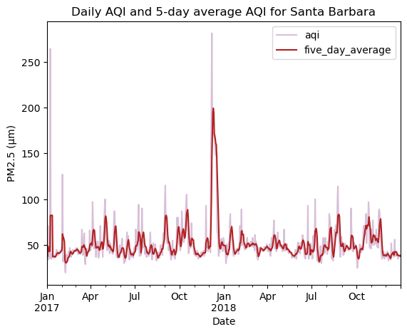
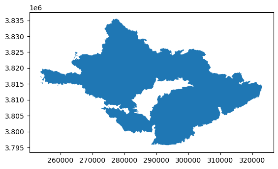
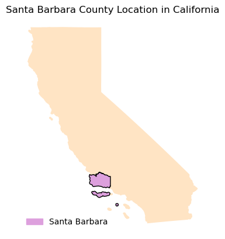
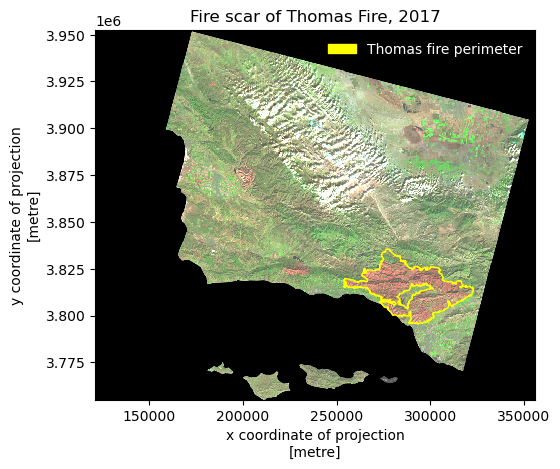

# read in pandas
import pandas as pd
# import matplotlib for colors
import matplotlib.pyplot as plt
# import libraries and functions here
import os
import numpy as np
import pandas as pd
import matplotlib.pyplot as plt
import matplotlib.patches as mpatches
## for geospatial analysis
import xarray as xr
import rioxarray as rioxr
import geopandas as gpdAbout
In this notebook we create a time series showing Averaged Air Quaility Index(AQI) for Santa Barbara in 2017 to observe the affects of the Thomas Fire. As well as creating a raster map of Santa Barbara fire scar from the Thomas Fire.
Highlights
- Fetch vector data from online repository
- Data wrangling with
pandas - Time series analysis with
matplotlib - Raster wrangling with
rioxarray - plot a color infared image
About the Datasets
In this notebook we use 3 different data sets.
AQI Time series Data
EPA’s Air Quality Data Collected at Outdoor Monitor Stations
The first dataset contains information on daily AQI readings across the United States. AQI readings are an indicator that allow the public to understand how polluted their air is. AQI is divided into 6 categories: - Good - Moderate - Unhealthy for Sensetive Groups - Unhealthy - Very Unhealthy - Hazardous
Higher levels in AQI translate to more pollution present in the atmosphere.
This dataset has been download from the EPA’s Air Quality System (AQS) as a datset. We are interested in 2017 and 2018 Daily AQI by county data. It has 10 columns recording information about the state name, date recorded, AQI, AQI category, and county name. For this analysis we will use the following columns: - County name: County where AQI levels were measured - AQI: air quality measure reported (based on PM2.5 present in the atmosphere)
Additional information and metadata for this datset is available in the Airdata Download Files Documentation
Thomas Fire Scar Data
This is a shapefile of California wildfires from 1878 to 2022. The data is updated annually in the spring with the fire perimeters from the previous fire season. As noted by The State of California and the Department of Forestry and Fire Protection this data provides a spatial distribution of the past large fires in California. But, this data is in no way a complete potrayal of the past fires. There are historical data missing, over generalization of big fires, and duplicated fires. Exercise caution when using this shapefile.
This shapefile has been downloaded from California Govt State Geoportal. It contains 23 columns recording information on the: year, location, cause, acres, and fire name. For this analysis we will be using the following columns: - Fire name: name of reported fire - Shape Area: Geometry of reported fire, will help with mapping
Additional data can be found in the Fire Perimeters Description
This is a NetCDF file of a raster of Santa Barbara visualizing Santa Barbara. The data was accessed and pre-processed in the Microsoft Planetary Computer. The raster consists of three dimensions: x,y, band. It also contains the following data variables: red, green, blue, nir08(near infared), swir22(short wave). For this analysis we are only interested in the: - x and y dimension - swir22, nir08,red
Additional information regarding the Landsat bands can be found at the following USGS websites.
Final Output
The final visualization for this notebook are the following figures:
Santa Barbara AQI 2017-2018

Santa Barbara Thomas Fire 2017

Import Libraries
Import necessary libraries for data wrangling and geospatial analysis
Import Data
Daily AQI Data
I am interested in daily_aqi_by_county_2017.zip and daily_aqi_by_county_2018.zip. Using the url above we import our data.
# read in 2017 Daily AQI by County data
aqi_17 = pd.read_csv("https://aqs.epa.gov/aqsweb/airdata/daily_aqi_by_county_2017.zip")
# read in 2018 Daily AQI by County data
aqi_18 = pd.read_csv("https://aqs.epa.gov/aqsweb/airdata/daily_aqi_by_county_2018.zip")California Wildfire Data
I am interested in aquiring California_Fire_Perimeters_2017.shp and landsat8-2018-01-26-sb-simplified.nc.
# Import California wildfire data
wildfires = gpd.read_file('data/California_Fire_Perimeters_2017/California_Fire_Perimeters_2017.shp')
# Import Landsat
landsat = rioxr.open_rasterio(os.path.join(os.getcwd(),'data','landsat8-2018-01-26-sb-simplified.nc'))Prepare Data
AQUI Data Preparation
We have two seperate dataframes, we should combine them for our analysis
# "Glue" aqi_17 and aqi_18
aqi = pd.concat([aqi_17,aqi_18])Before we continue our analysis we should update the column names in a more programmer friendly manner. Update the column names to be lower case and replace the blank space with _.
# Update column by making lower case and replace space with underscore
aqi.columns = aqi.columns.str.lower().str.replace(' ','_')
# View our updates
aqi.head(3)| state_name | county_name | state_code | county_code | date | aqi | category | defining_parameter | defining_site | number_of_sites_reporting | |
|---|---|---|---|---|---|---|---|---|---|---|
| 0 | Alabama | Baldwin | 1 | 3 | 2017-01-01 | 21 | Good | PM2.5 | 01-003-0010 | 1 |
| 1 | Alabama | Baldwin | 1 | 3 | 2017-01-04 | 22 | Good | PM2.5 | 01-003-0010 | 1 |
| 2 | Alabama | Baldwin | 1 | 3 | 2017-01-10 | 19 | Good | PM2.5 | 01-003-0010 | 1 |
Let us check our dataset type
# check data types of columns
aqi.dtypesstate_name object
county_name object
state_code int64
county_code int64
date object
aqi int64
category object
defining_parameter object
defining_site object
number_of_sites_reporting int64
dtype: objectNotice that our date column is an object. Let’s change that to a datetime64. And update our date column to be the index.
# update date column to be datetime object
aqi = aqi.copy()
aqi.date = pd.to_datetime(aqi.date)
print(aqi.dtypes)
aqi = aqi.set_index("date")
# View index change
print(aqi.index)state_name object
county_name object
state_code int64
county_code int64
date datetime64[ns]
aqi int64
category object
defining_parameter object
defining_site object
number_of_sites_reporting int64
dtype: object
DatetimeIndex(['2017-01-01', '2017-01-04', '2017-01-10', '2017-01-13',
'2017-01-16', '2017-01-19', '2017-01-22', '2017-01-25',
'2017-01-28', '2017-01-31',
...
'2018-12-22', '2018-12-23', '2018-12-24', '2018-12-25',
'2018-12-26', '2018-12-27', '2018-12-28', '2018-12-29',
'2018-12-30', '2018-12-31'],
dtype='datetime64[ns]', name='date', length=654338, freq=None)Landsat Data Preparation
First we can take a quick look at our landsat
# View landsat
landsat<xarray.Dataset>
Dimensions: (y: 731, x: 870, band: 1)
Coordinates:
* y (y) float64 3.952e+06 3.952e+06 ... 3.756e+06 3.755e+06
* x (x) float64 1.213e+05 1.216e+05 ... 3.557e+05 3.559e+05
* band (band) int64 1
spatial_ref int64 0
Data variables:
red (band, y, x) float64 ...
green (band, y, x) float64 ...
blue (band, y, x) float64 ...
nir08 (band, y, x) float64 ...
swir22 (band, y, x) float64 ...xarray.Dataset
- y: 731
- x: 870
- band: 1
- y(y)float643.952e+06 3.952e+06 ... 3.755e+06
- axis :
- Y
- crs :
- EPSG:32611
- long_name :
- y coordinate of projection
- resolution :
- -30
- standard_name :
- projection_y_coordinate
- units :
- metre
- _FillValue :
- nan
array([3952395., 3952125., 3951855., ..., 3755835., 3755565., 3755295.])
- x(x)float641.213e+05 1.216e+05 ... 3.559e+05
- axis :
- X
- crs :
- EPSG:32611
- long_name :
- x coordinate of projection
- resolution :
- 30
- standard_name :
- projection_x_coordinate
- units :
- metre
- _FillValue :
- nan
array([121305., 121575., 121845., ..., 355395., 355665., 355935.])
- band(band)int641
array([1])
- spatial_ref()int640
- crs_wkt :
- PROJCS["WGS 84 / UTM zone 11N",GEOGCS["WGS 84",DATUM["WGS_1984",SPHEROID["WGS 84",6378137,298.257223563]],PRIMEM["Greenwich",0],UNIT["degree",0.0174532925199433,AUTHORITY["EPSG","9122"]],AUTHORITY["EPSG","4326"]],PROJECTION["Transverse_Mercator"],PARAMETER["latitude_of_origin",0],PARAMETER["central_meridian",-117],PARAMETER["scale_factor",0.9996],PARAMETER["false_easting",500000],PARAMETER["false_northing",0],UNIT["metre",1],AXIS["Easting",EAST],AXIS["Northing",NORTH],AUTHORITY["EPSG","32611"]]
- semi_major_axis :
- 6378137.0
- semi_minor_axis :
- 6356752.314245179
- inverse_flattening :
- 298.257223563
- reference_ellipsoid_name :
- WGS 84
- longitude_of_prime_meridian :
- 0.0
- prime_meridian_name :
- Greenwich
- geographic_crs_name :
- WGS 84
- horizontal_datum_name :
- World Geodetic System 1984
- projected_crs_name :
- WGS 84 / UTM zone 11N
- grid_mapping_name :
- transverse_mercator
- latitude_of_projection_origin :
- 0.0
- longitude_of_central_meridian :
- -117.0
- false_easting :
- 500000.0
- false_northing :
- 0.0
- scale_factor_at_central_meridian :
- 0.9996
- spatial_ref :
- PROJCS["WGS 84 / UTM zone 11N",GEOGCS["WGS 84",DATUM["WGS_1984",SPHEROID["WGS 84",6378137,298.257223563]],PRIMEM["Greenwich",0],UNIT["degree",0.0174532925199433,AUTHORITY["EPSG","9122"]],AUTHORITY["EPSG","4326"]],PROJECTION["Transverse_Mercator"],PARAMETER["latitude_of_origin",0],PARAMETER["central_meridian",-117],PARAMETER["scale_factor",0.9996],PARAMETER["false_easting",500000],PARAMETER["false_northing",0],UNIT["metre",1],AXIS["Easting",EAST],AXIS["Northing",NORTH],AUTHORITY["EPSG","32611"]]
- GeoTransform :
- 121170.0 270.0 0.0 3952530.0 0.0 -270.0
array(0)
- red(band, y, x)float64...
- add_offset :
- 0.0
- coordinates :
- time
- scale_factor :
- 1.0
- _FillValue :
- 0.0
[635970 values with dtype=float64]
- green(band, y, x)float64...
- add_offset :
- 0.0
- coordinates :
- time
- scale_factor :
- 1.0
- _FillValue :
- 0.0
[635970 values with dtype=float64]
- blue(band, y, x)float64...
- add_offset :
- 0.0
- coordinates :
- time
- scale_factor :
- 1.0
- _FillValue :
- 0.0
[635970 values with dtype=float64]
- nir08(band, y, x)float64...
- add_offset :
- 0.0
- coordinates :
- time
- scale_factor :
- 1.0
- _FillValue :
- 0.0
[635970 values with dtype=float64]
- swir22(band, y, x)float64...
- add_offset :
- 0.0
- coordinates :
- time
- scale_factor :
- 1.0
- _FillValue :
- 0.0
[635970 values with dtype=float64]
One issue we see is that we have an extra dimension band that is not needed. Let’s remove it!
# There are 3 dimensions in Landsat let's drop band
# original dimensions and coordinates
print(f"Original dimensions: {landsat.dims} \n{landsat.coords}")
# remove length 1 dimension (band)
landsat = landsat.squeeze()
print(landsat.dims, landsat.coords, '\n')
# remove coordinates associated to band
landsat = landsat.drop('band')
print(landsat.dims, landsat.coords, '\n')Original dimensions: Frozen({'y': 731, 'x': 870, 'band': 1})
Coordinates:
* y (y) float64 3.952e+06 3.952e+06 ... 3.756e+06 3.755e+06
* x (x) float64 1.213e+05 1.216e+05 ... 3.557e+05 3.559e+05
* band (band) int64 1
spatial_ref int64 0
Frozen({'y': 731, 'x': 870}) Coordinates:
* y (y) float64 3.952e+06 3.952e+06 ... 3.756e+06 3.755e+06
* x (x) float64 1.213e+05 1.216e+05 ... 3.557e+05 3.559e+05
band int64 1
spatial_ref int64 0
Frozen({'y': 731, 'x': 870}) Coordinates:
* y (y) float64 3.952e+06 3.952e+06 ... 3.756e+06 3.755e+06
* x (x) float64 1.213e+05 1.216e+05 ... 3.557e+05 3.559e+05
spatial_ref int64 0
Wildfire Data Preparation
Lets explore our Wildfire shapefile and view it’s attributes before data preparation.
# View dataframe
wildfires.head(3)| index | OBJECTID | YEAR_ | STATE | AGENCY | UNIT_ID | FIRE_NAME | INC_NUM | ALARM_DATE | CONT_DATE | ... | GIS_ACRES | COMMENTS | COMPLEX_NA | COMPLEX_IN | IRWINID | FIRE_NUM | DECADES | SHAPE_Leng | SHAPE_Area | geometry | |
|---|---|---|---|---|---|---|---|---|---|---|---|---|---|---|---|---|---|---|---|---|---|
| 0 | 19836 | 41429 | 2017 | CA | CCO | VNC | BROOK | 00042450 | 2017-05-23 | 2017-05-24 | ... | 10.043819 | per walked track | None | None | None | None | 2010 | 1246.055781 | 59473.666651 | POLYGON ((-13229812.974 4046876.486, -13229786... |
| 1 | 19837 | 41430 | 2017 | CA | CCO | VNC | PACIFIC | 00075307 | 2017-09-09 | 2017-09-09 | ... | 1.190109 | Final Walked track. Small spot to the north east | None | None | None | None | 2010 | 561.418202 | 7081.369481 | POLYGON ((-13286872.985 4074523.355, -13286895... |
| 2 | 19838 | 41431 | 2017 | CA | CCO | VNC | GRADE | 00054660 | 2017-07-04 | 2017-07-05 | ... | 47.194027 | None | None | None | None | None | 2010 | 2587.259697 | 279911.825212 | POLYGON ((-13244637.580 4056332.530, -13244620... |
3 rows × 23 columns
Lets update the column names to lowercase
# Make column names lowercase
wildfires.columns = wildfires.columns.str.lower()
# View our update
wildfires.columnsIndex(['index', 'objectid', 'year_', 'state', 'agency', 'unit_id', 'fire_name',
'inc_num', 'alarm_date', 'cont_date', 'cause', 'c_method', 'objective',
'gis_acres', 'comments', 'complex_na', 'complex_in', 'irwinid',
'fire_num', 'decades', 'shape_leng', 'shape_area', 'geometry'],
dtype='object')A necessary step for plotting the Landsat data and Wildfire data is to make sure they are projected on the same CRS. Let’s check if their CRS are the same, if not let us update them.
# Check Wildfires original CRS
print(f"Original CRS check: {wildfires.crs == landsat.rio.crs}")
#Update wildfire CRS to match Landsar CRS
wildfires = wildfires.to_crs(landsat.rio.crs)
# Check update
print(f"Updated CRS check: {wildfires.crs == landsat.rio.crs}")Original CRS check: False
Updated CRS check: TrueData Selection
Santa Barbara
Our current dataframe includes all Counties in the United States. But, we are only interested in Santa Barbara. Let’s filter our dataframe to Santa Barbara County
# Select Santa Barbara
aqi_sb = aqi[aqi.county_name == "Santa Barbara"]
# Check that we only filtered for Santa Barbara by unique county_names
aqi_sb.county_name.unique()array(['Santa Barbara'], dtype=object)Now that we filtered our dataset to just Santa Barbara let’s do further analysis on our dataset - view column data types.
To further update this dataset let us remove the columns we are not interested in, removing state_name,county_name, state_code, county_code
# remove state_name, county_name, state_code and county_code columns
aqi_sb = aqi_sb.drop(columns = ['state_name','county_name','state_code','county_code'])
# View remaining columns
aqi_sb.columnsIndex(['aqi', 'category', 'defining_parameter', 'defining_site',
'number_of_sites_reporting'],
dtype='object')Wildfire
Our interest is only on the Thomas fire, let us filter our data to only include it.
# We are interested in the THOMAS FIRE
# Filter dataset to THOMAS FIRE
wildfires = wildfires[wildfires.fire_name == 'THOMAS']
# Check if we have only selected the
print(wildfires.fire_name.unique())
# View map of newly filtered data
wildfires.plot()['THOMAS']<AxesSubplot:>
Geographic Context
For context, let see where Santa Barbara county is relative to California
#--------- Import California boundary -----------------------------------------
california = gpd.read_file("data/california_boundary/CA_State_TIGER2016.shp")
cali_counties = gpd.read_file("data/california_counties_boundaries/CA_Counties_TIGER2016.shp")
# -------Filter to Santa Barbara ----------------------------------------------
santa_barbara = cali_counties[cali_counties.NAME == "Santa Barbara"]
# ---------Create Map----------------------------------------------------------
fig, ax = plt.subplots()
ax.axis('off')
ax.set_title("Santa Barbara County Location in California")
california.plot(ax=ax,color = 'bisque')
santa_barbara.plot(ax=ax, color = 'plum', edgecolor = "black")
sb_patch = mpatches.Patch(color = "plum",
label = 'Santa Barbara')
ax.legend(handles = [sb_patch], frameon = False, loc = "lower left", labelcolor = "black")<matplotlib.legend.Legend at 0x7f55d5a71c40>
Data Visualization
Time Series
To calculate the trend of AQI values we conduct a 5-day rolling average.
# Create a new column with mean AQI over a 5-day rolling average.
#aqi_sb["five_day_average"] = aqi_sb.aqi.rolling("5D").mean()
aqi_sb["five_day_average"] = aqi_sb.aqi.rolling("5D").mean()Now we can make a line plot of our time series! Let us compare both the daily AQI and 5-day moving average.
# define colors for plot
colors = ['thistle','firebrick']
# ------ Plot figure -----------------------------------------------------------------
# line plot of daily AQI and the 5-day average
aqi_sb.plot(y = ['aqi','five_day_average'], # setting y as AQI and 5-day average AQI
xlabel = "Date", # x-axis label
ylabel = "PM2.5 (μm)", #y-axis label
title = "Daily AQI and 5-day average AQI for Santa Barbara", # title
color = colors) #setting colors for lines
# -----Save Figure-----------------------------------------------------------------------
plt.savefig('images/sb_county_aqi.png',bbox_inches = 'tight',dpi = 100)
plt.show()
Map of Fire Scar
For our map of fire scar in Santa Barbara we can the Thomas Fire scar on top of the Santa Barbara raster. Our map will have:
- a legend indicating the area of the Thomas fire scar
- false color image
- title
- no axis
# Plot Wildfire and Landsat data together
fig, ax = plt.subplots()
# ---Landsat Map------------------------------------------------------------------------------------------------------------
# Here we are plotting with false color image by plotting the short-waved infared (swir22), near-infared, and red variable
# False color imaging allows us to differentiate the Thomas fire scar from the rest of the Santa Barbara area
landsat[['swir22','nir08','red']].to_array().plot.imshow(ax=ax,robust = True)
ax.set_facecolor('white')
#---Thomas Fire Layer-------------------------------------------------------------------------------------------------------
wildfires.plot(ax=ax, color = 'none', edgecolor = "yellow", linewidth = 1)
wildfires_patch = mpatches.Patch(color = 'yellow',
label = 'Thomas fire perimeter')
# ---Legend-----------------------------------------------------------------------------------------------------------------
plt.title("Fire scar of Thomas Fire, 2017") # title
ax.legend(handles = [wildfires_patch], frameon = False, loc = "upper right", labelcolor = "white")
# ------Save Image----------------------------------------------------------------------------------------------------------
plt.savefig('../EDS220-Task3-Presentation-Ready/images/sb_thomas_fire_2017.png',bbox_inches = 'tight',dpi = 100)
plt.show() 
Citation
BibTeX citation:
@online{vaquero,
author = {Vaquero, Hazel},
title = {Santa {Barbara} 2021 {Thomas} {Fire} {AQI} and Fire Scar},
url = {https://hazelvaq.github.io/blog/2023-12-23-SB-Thomas-Fire/},
langid = {en}
}
For attribution, please cite this work as:
Vaquero, Hazel. n.d. “Santa Barbara 2021 Thomas Fire AQI and Fire
Scar.” https://hazelvaq.github.io/blog/2023-12-23-SB-Thomas-Fire/.